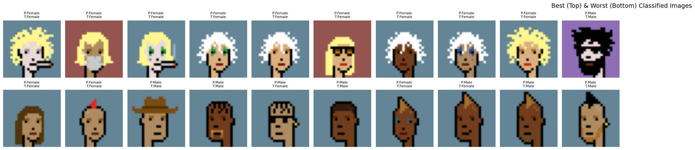
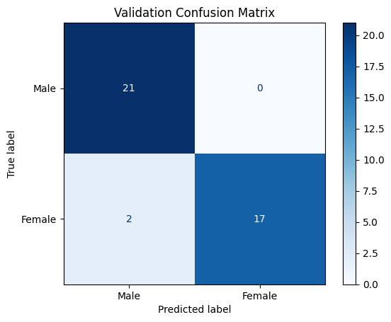

一个准确率掩盖了错误来自哪里
模型、样本覆盖和人工标签都可能造成误判，只看总分无法决定下一步应该改什么。
Applied AI · 03
用手工标签、验证样本和错误诊断检查分类模型，更关注数据定义是否可信，而不是只追逐模型分数。


模型、样本覆盖和人工标签都可能造成误判，只看总分无法决定下一步应该改什么。
通过代表性样本、真实标签和混淆关系，区分视觉模糊、标签不一致与模型判断问题。
迭代方向从追逐分数变成改善类别定义和样本质量，让后续模型调整建立在真实问题上。
Purpose
项目以 NFT 像素头像为样本，尝试识别性别表达相关类别。重点不是做一个高风险的人脸判断产品，而是通过一个边界清楚的小型任务，学习如何建立标签、验证模型并解释错误。
最终希望得到的不只是一个准确率，而是一套能够回答“模型在哪些样本上可靠、为什么会错、数据定义是否合理”的分析过程。
Challenges
Solution
先建立人工标注样本和独立验证集，再比较预测标签与真实标签；随后把分类最好、最差和最容易混淆的样本并列复盘，并结合混淆矩阵观察错误是否集中在特定类别。
这种做法把注意力从“继续换模型”转向数据覆盖、标签一致性和类别边界，让每次迭代都针对已观察到的问题。
Outcome